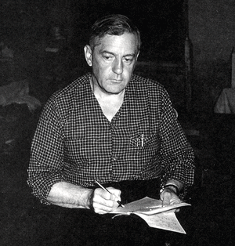

R. Gordon Wasson
Gordon Wasson in Mexico (1955)
Photo by Allan B. Richardson. Courtesy Wasson Collection.
The
Salvia divinorum
Research and Information Center
is created and maintained by
Daniel Siebert
